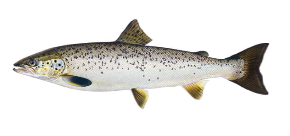
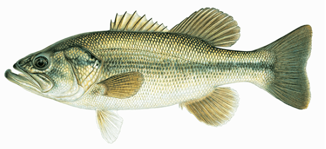
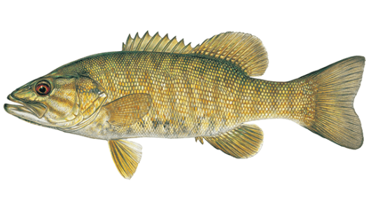
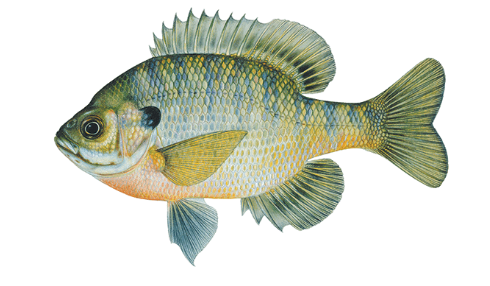

Atlantic Salmon
These fish can be hard to identify and can be confused for chinook, coho, or rainbow trout. Adults have black spots on sides, dark pectoral fins, and forked caudal fin. They have two dorsal fins and one adipose fin. The jaw typically extends to the back edge of the eye or further. Atlantic salmon are known for their leaping and fighting ability
Largemouth Bass
They have two dorsal fins and a long body. A good way to identify them is if the upper jaw extends past the eye. They are light green with a dark lateral stripe. In Michigan, largemouth bass are not typically found deeper than 20 feet. They are most active in warm waters, about 70-85 degrees.
Smallmouth Bass
Very similar to the largemouth bass but the jaw only extends to the middle of the eye. They have dark vertical bars. The usual smallmouth is 8 to 15 inches long and weighs less than three pounds, but they are capable of reaching up to six pounds.
Bluegill
They have two spiny dorsal fins that look like one dorsal fin. They have small mouths. They have a unique faint black coloring near the back of the dorsal fin which helps separate them from other sunfish.